Ground party events only. Left half of the stands wears the Player 1 blue, right half the Player 2 yellow. Numbers and weak points: README.md and numbers.txt in this folder.
Dusk
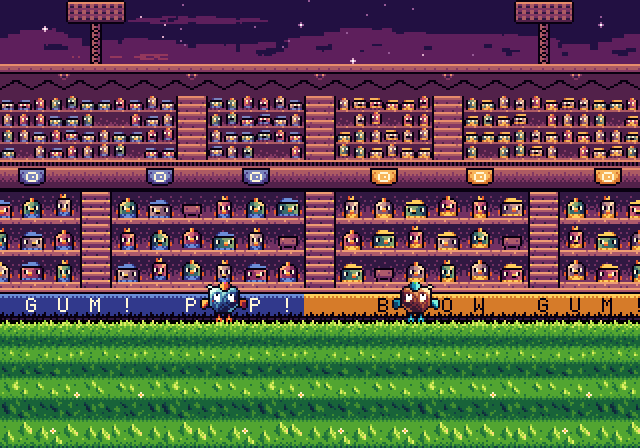
Composed scene, idle frame 0, 2xCrowd idle: bob and chatter, 16 frames at 70 ms, 3x
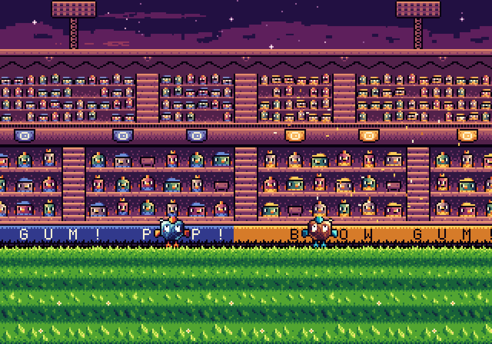
Cheer burst: Player 1 side, then Player 2 side, 64 frames at 70 ms, 3xStadium wave, left to right, 64 frames at 70 ms, 3x
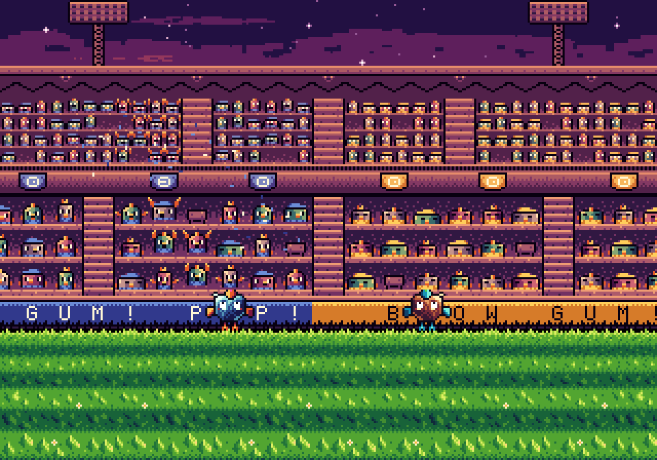
Win wave: Player 1 wins, Player 2 side slumps, 64 frames at 70 ms, 3x
Plane: sky, 1x (magenta is transparent)
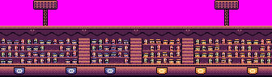
Plane: far, 1x (magenta is transparent)
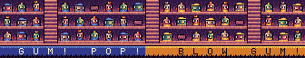
Plane: near, 1x (magenta is transparent)
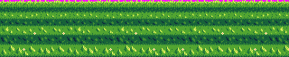
Plane: grass, 1x (magenta is transparent)
Moon
Composed scene, idle frame 0, 2x
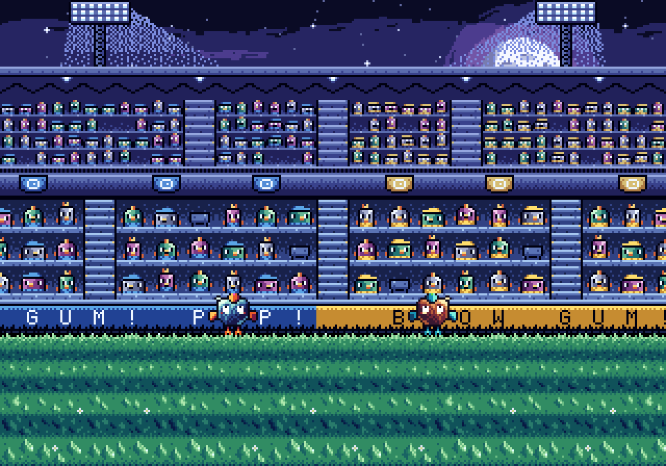
Crowd idle: bob and chatter, 16 frames at 70 ms, 3xCheer burst: Player 1 side, then Player 2 side, 64 frames at 70 ms, 3xStadium wave, left to right, 64 frames at 70 ms, 3xWin wave: Player 1 wins, Player 2 side slumps, 64 frames at 70 ms, 3x
Plane: sky, 1x (magenta is transparent)
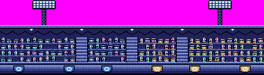
Plane: far, 1x (magenta is transparent)
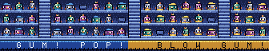
Plane: near, 1x (magenta is transparent)
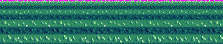
Plane: grass, 1x (magenta is transparent)
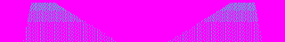
Plane: cones, 1x (magenta is transparent)
Storm
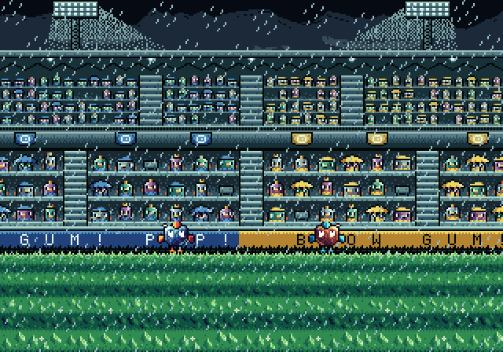
Composed scene, idle frame 0, 2xCrowd idle: bob and chatter, 16 frames at 70 ms, 3xCheer burst: Player 1 side, then Player 2 side, 64 frames at 70 ms, 3xStadium wave, left to right, 64 frames at 70 ms, 3xWin wave: Player 1 wins, Player 2 side slumps, 64 frames at 70 ms, 3x
Plane: sky, 1x (magenta is transparent)
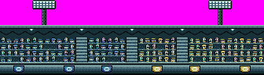
Plane: far, 1x (magenta is transparent)
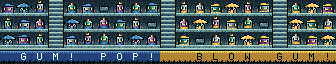
Plane: near, 1x (magenta is transparent)
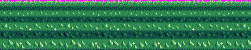
Plane: grass, 1x (magenta is transparent)
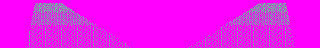
Plane: cones, 1x (magenta is transparent)
Hand cells
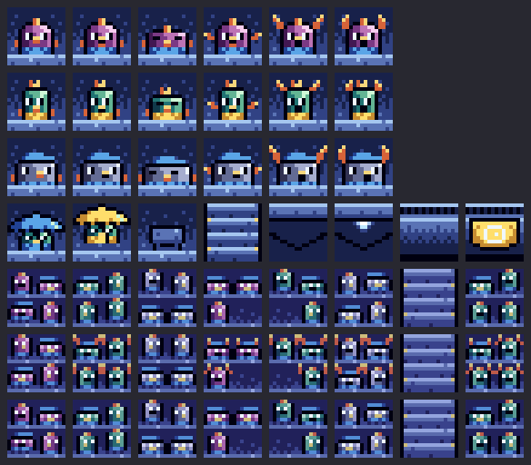
Rows 1 to 3: near bird types a, b, c in poses sit, beak open, squash, wings mid, wings up, wings up narrow. Row 4: umbrella, umbrella raised, empty seat, stairs, roof, roof lamp, balcony front, banner. Rows 5 to 7: far crowd tiles in idle, cheer, wave. Moon palettes, 4x.